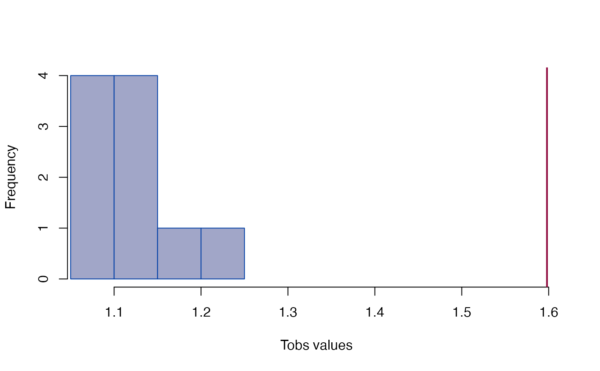
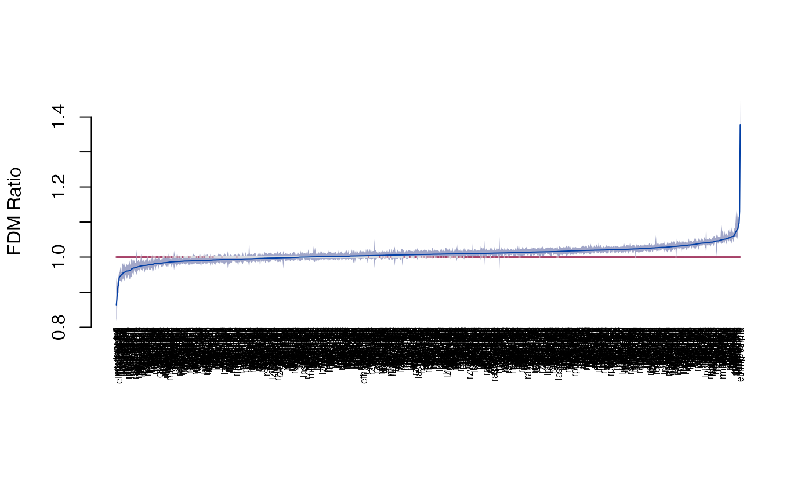

Form difference
edma_fdm.RdForm difference matrix based inference based on Lele and Richtsmeier (1992, 1995).
edma_fdm(numerator, denominator, B=0, ref_denom=TRUE, mix=FALSE) get_influence(object, ...) # S3 method for edma_dm get_influence(object, level=0.95, ...) # S3 method for edma_influence plot(x, ...) get_fdm(object, ...) # S3 method for edma_fdm get_fdm(object, sort=FALSE, level=0.95, ...) T_test(object, ...) # S3 method for edma_fdm T_test(object, ...) # S3 method for edma_dm confint(object, parm, level=0.95, ...) # S3 method for edma_fdm print(x, ...) # S3 method for edma_fdm landmarks(x, ...) # S3 method for edma_fdm dimensions(x, ...) plot_ci(x, ...) plot_Ttest(x, ...) # S3 method for edma_dm plot(x, ...) # S3 method for edma_dm plot_2d(x, ...) # S3 method for edma_dm plot_3d(x, ...) # S3 method for edma_dm plot_Ttest(x, ...) # S3 method for edma_fdm plot_ci(x, ...) # S3 method for edma_fdm plot_ord(x, ...) # S3 method for edma_fdm plot_clust(x, ...)
Arguments
| numerator, denominator | EDMA fit object to compare forms. |
|---|---|
| B | nonnegative integer, the number of bootstrap replicates. |
| ref_denom | logical, when |
| mix | logical, to use mixed bootstrap (numeriator and denominator populations are mixed with replacement) or not (only the reference population is resampled with replacement). |
| x, object | an EDMA FDM object of class 'edma_fdm'. |
| sort | logical, if stacked distances are to be sorted, see Examples. |
| level | numeric, between 0 and 1, alpha level for confidence interval. |
| parm | a specification of which parameters are to be given
confidence intervals, either a vector of numbers or a vector of names.
See |
| ... | other arguments passed to methods. |
Details
Form difference (FDM) is calculated as the ratio of form matrices (FM) from the numerator and denominator objects following Lele and Richtsmeier (1992, 1995): FDM(A,B) = FM(B)/FM(A). Form matrices are formed as pairwise Euclidean distances between landmarks from EDMA fit objects using the estimated mean forms.
Bootstrap distribution is based on fixing the reference FM and taking the ration between the reference FM and the bootstrap FMs from the other object.
The T-statistic is based on the pairwise distanced in the FM,
taking the max/min of the distances. Confidence intervals for local testing
(via confint, get_fdm, and plot_ci)
and T-test for global testing
(via T_test, and plot_Ttest)
is based on the observed T-statistic and the bootstrap distribution.
Influential landmarks are identified by leaving one landmark out,
then comparing the T-statistic with the value based on all the
landmarks. The existing bootstrap distribution of
the mean form is used (i.e. no re-estimation of the mean form)
in get_influence.
Value
edma_fdm compares two EDMA fit objects and calculates
form difference.
confint returns the confidence intervals for FDM,
the get_fdm extract the stacked FDM with confidence intervals,
the plot_ci visualizes the ordered form differences with
confidence intervals.
get_influence extracts landmark influence information,
the plot method visualizes this.
T_test presents the global T-test,
the bootstrap distribution and observed T-value is
visualized by plot_Ttest.
plot and plot_2d produces a 2D plot of the mean form
from the reference object ('prototype').
plot_3d use the rgl package to make a 3D plot using the same
mean form. Influential landmarks are colored red.
Lines represent distances between landmarks,
<1 differences are colored blue, >1 differences are colored red.
The plot_ord and plot_clust
produce plots based on dissimilarities among specimens
in the two objects.
References
Lele, S. R., and Richtsmeier, J. T., 1992. On comparing biological shapes: detection of influential landmarks. American Journal of Physical Anthropology 87:49--65. <doi:10.1002/ajpa.1330870106>
Lele, S. R., and Richtsmeier, J. T., 1995. Euclidean distance matrix analysis: confidence intervals for form and growth differences. American Journal of Physical Anthropology 98:73--86. <doi:10.1002/ajpa.1330980107>
Author
Peter Solymos, Subhash R. Lele, Theodore M. Cole, Joan T. Richtsmeier
See also
Examples
file1 <- system.file("extdata/crouzon/Crouzon_P0_Global_MUT.xyz", package="EDMAinR") x1 <- read_xyz(file1) file2 <- system.file("extdata/crouzon/Crouzon_P0_Global_NON-MUT.xyz", package="EDMAinR") x2 <- read_xyz(file2) numerator <- edma_fit(x1, B=10) denominator <- edma_fit(x2, B=10) fdm <- edma_fdm(numerator, denominator, B=10) fdm2 <- edma_fdm(numerator, denominator, B=10, ref_denom=FALSE) fdm#> EDMA form difference matrix #> Call: edma_fdm(numerator = numerator, denominator = denominator, B = 10) #> 10 bootstrap runs (ref: denominator) #> T = 1.5981, p < 2.22e-16fdm2#> EDMA form difference matrix #> Call: edma_fdm(numerator = numerator, denominator = denominator, B = 10, #> ref_denom = FALSE) #> 10 bootstrap runs (ref: numerator) #> T = 1.5981, p < 2.22e-16#> row col dist lower upper #> 1 bas amsph 1.0425379 1.0334334 1.0505911 #> 2 cpsh amsph 0.9823765 0.9668522 0.9979656 #> 3 ethma amsph 1.0037761 0.9871149 1.0091875 #> 4 ethmp amsph 0.9401242 0.9345197 0.9461407 #> 5 laalf amsph 0.9878983 0.9736409 0.9967434 #> 6 lasph amsph 1.0161844 1.0076297 1.0310683#> row col dist lower upper #> 136 ethmp ethma 1.377873 1.261254 1.418273 #> 697 rpto lpto 1.131002 1.100750 1.150559 #> 179 laalf ethmp 1.095672 1.063370 1.108962 #> 200 raalf ethmp 1.094267 1.062579 1.106917 #> 881 rpmx raalf 1.080811 1.070879 1.101230 #> 607 rpns lpns 1.078698 1.073212 1.113346#> row col dist lower upper #> 527 lsqu lpfl 0.8622059 0.7966536 0.9028304 #> 1022 rsqu rpfl 0.8781312 0.8522040 0.9115681 #> 93 ethmp cpsh 0.9034404 0.8904980 0.9172977 #> 212 rpsh ethmp 0.9177018 0.9085373 0.9319954 #> 190 lpsh ethmp 0.9181652 0.9082000 0.9331402 #> 4 ethmp amsph 0.9401242 0.9345197 0.9461407T_test(fdm)#> #> Bootstrap based EDMA T-test #> #> data: form difference matrix #> T-value = 1.5981, B = 10, p-value < 2.2e-16 #>T_test(fdm2)#> #> Bootstrap based EDMA T-test #> #> data: form difference matrix #> T-value = 1.5981, B = 10, p-value < 2.2e-16 #>#> 2.5% 97.5% #> bas-amsph 1.0334334 1.0505911 #> cpsh-amsph 0.9668522 0.9979656 #> ethma-amsph 0.9871149 1.0091875 #> ethmp-amsph 0.9345197 0.9461407 #> laalf-amsph 0.9736409 0.9967434 #> lasph-amsph 1.0076297 1.0310683#> landmark Tdrop lower upper #> 1 amsph 1.598078 1.065736 1.507695 #> 2 bas 1.598078 1.065736 1.507695 #> 3 cpsh 1.598078 1.065736 1.507695 #> 4 ethma 1.311754 1.062120 1.292952 #> 5 ethmp 1.311754 1.062120 1.292952 #> 6 laalf 1.598078 1.065736 1.507695plot_Ttest(fdm)plot_ci(fdm)